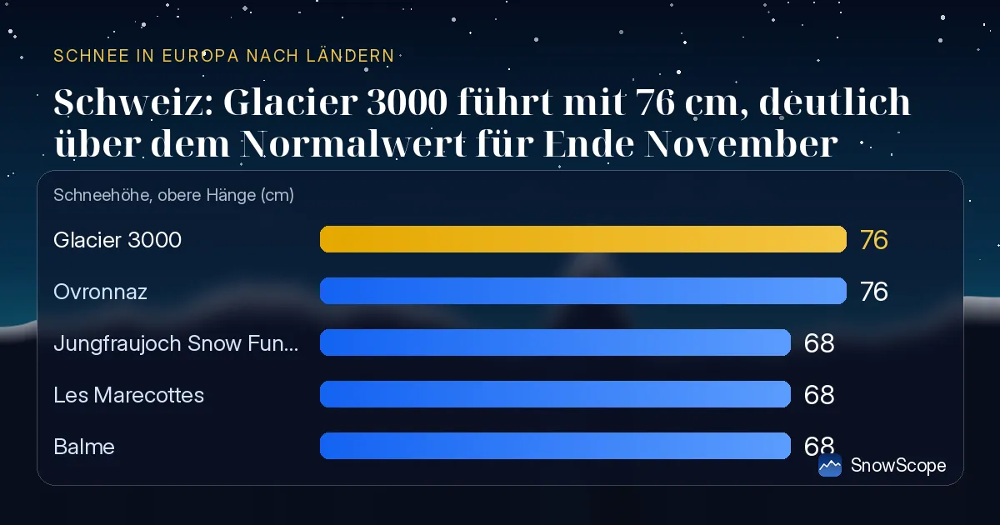

Schweiz: Glacier 3000 führt mit 76 cm, deutlich über dem Normalwert für Ende November
Die Schweiz liegt bei der Schneeauflage für Ende November weit über dem Durchschnitt. Glacier 3000 hat 76 cm, was seltener ist als in neun von zehn vergangenen Wintern an diesem Datum.
Die Live-Schneeprognose für Glacier 3000 in der SnowScope-AppSchneehöhen, Pulverschnee-Alarme und 3D-Karte, gratis.
Über der Neun-Winter-Marke
Glacier 3000 hat jetzt 76 cm. Diese Tiefe ist höher als das, was der Berg am 23. November in neun von den letzten zehn Jahren gesehen hat. Der übliche Wert für diesen Termin liegt bei 20 cm, die aktuelle Schneeauflage ist also knapp viermal höher als normal. Das ist der Vorsprung, der eine Saison verändert.
Fünf von der Schweiz' großen Skigebieten liegen deutlich über ihrem saisonalen Mittel. Auch Ovronnaz hat 76 cm gegenüber einem typischen Wert von 20 cm. Les Marecottes und Balme, niedrigere Stationen in den Walliser Alpen und dem Mont-Blanc-Gebiet, sind von ihrem normalen Wert von 27–30 cm Ende November auf 68 cm gestiegen. Selbst Jungfraujoch Snow Fun Park, das in einer Höhe liegt, wo Schnee immer reichlich vorhanden ist, hat 68 cm, wo es zu dieser Zeit normalerweise 59 cm sind.
| Skigebiet | Heute | Normal an diesem Tag | Anteil am Normalwert |
|---|---|---|---|
| Glacier 3000 | 76 cm | 20 cm | 380 % |
| Ovronnaz | 76 cm | 20 cm | 380 % |
| Jungfraujoch Snow Fun Park | 68 cm | 59 cm | 115 % |
| Les Marecottes | 68 cm | 27 cm | 252 % |
| Balme | 68 cm | 30 cm | 227 % |

Drei Hotspots in drei Tagen
Die letzten 72 Stunden brachten bis zu 79 cm in der Region. Der Schnee fiel nicht gleichmäßig. Das Berner Oberland kam auf 144 cm in drei Tagen, die Walliser Alpen auf 139 cm und Zentralschweiz auf 103 cm. Glacier 3000, das in der Berner Hochalp liegt, bekam 99 cm in diesem Zeitraum und führt nun alle Schweizer Skigebiete an.
Diese Art von Schneefall entsteht, wenn feuchte Luft von Norden auf die hohen Grate trifft. Früher Schnee ist typischerweise leicht und setzt sich schnell, aber 144 cm in drei Tagen auf steilem Gelände ist ein Warnsignal, das es zu beachten gilt. Die Schneegrenze liegt heute bei 900 m; darunter ist die Schneedecke fleckig und blanke Stellen sind noch wahrscheinlich.

Höhe macht den Unterschied
Die Schneetiefe nimmt deutlich mit der Höhe zu. Zwischen 500 und 1.000 m liegt der Durchschnitt bei nur 1 cm und nur 29 Prozent des Geländes sind weiß. Springen Sie auf 1.000–1.500 m und der Durchschnitt erreicht 7 cm bei 84 Prozent Bedeckung. Bei 1.500–2.000 m haben Sie 18 cm und fast vollständige Bedeckung. Über 2.000 m wird der Schnee dicker: 24 cm bei 2.000–2.500 m und 36 cm über 2.500 m, mit 100 Prozent Bedeckung.
Dieses geschichtete Bild erzählt die Geschichte einer nassen Saison, die früh in hohen Lagen angekommen ist, aber noch nicht zu einer stabilen Basis in niedrigeren Skigebieten verfestigt hat. Steine, Gras und dünne Stellen prägen noch immer viele Hänge unter 1.500 m.
Mehr Schnee kommt
In den nächsten drei Tagen sind bis zu 25 cm angesagt. Der schneereichste Tag wird der 25. November mit etwa 20 cm erwartet. Die kommende Woche bringt bis zu 29 cm über das Vorhersagefenster. Dieses Tempo ist nicht typisch; es bedeutet, dass die Berge das Ende eines aktiven Systems fangen, das Ende November nicht üblich ist.
Nach Tag sieben sieht die zweite Woche viel ruhiger aus. Nur 3 cm werden zwischen 1. und 7. Dezember erwartet. Der aktuelle Schneefall ist das Ereignis, das es zu beobachten und zu fahren gilt, solange es andauert.
Trend: eine Woche des Aufbaus
Vor einer Woche hatten nur 16.100 km² der Region Schneebedeckung. Gestern waren es 21.990 km². Heute sind es 23.710 km². Das ist ein Zuwachs von 7.610 km² in einer Woche. Der Anstieg in den letzten 24 Stunden allein betrug 1.720 km², bei 76 Prozent der erfassten Region jetzt weiß.
Glacier 3000 führt die Rankings in fünf der letzten sieben Tage an. Die Konsistenz zeigt, dass die Hochgipfel der Berner Oberland der Drehpunkt dieses Ereignisses sind, die meiste Feuchtigkeit anziehen und die Schneegrenze am höchsten halten.
Was du wissen musst
Frühjahrsschnee ist leicht und kann Steine und raues Gelände verbergen, besonders unter 1.500 m. Prüfe die Bedingungen vor Ort und beachte das offizielle Lawinenbulletin, bevor du abseits der Piste unterwegs bist. Das Fenster mit gutem Schnee verengt sich nach dieser Woche wieder, also sind die nächsten Tage Hochsaison für das Hochgelände, wo die Tiefe und Bedeckung am zuverlässigsten sind.
Tipps für Skifahrer
- Glacier 3000, Ovronnaz und Jungfraujoch Snow Fun Park sind die Tiefenführer; alle drei haben 68 cm oder mehr und sind über 2.195 m in Höhen mit vollständiger Bedeckung.
- Bleib über 1.500 m, wenn du durchgehende Schneebedeckung möchtest. Unter dieser Höhe sind Steine und Flecken auch nach dem jüngsten Fall häufig.
- Die nächsten drei Tage bringen Schnee, mit dem 25. November als dem schneereichtsten. Plane deinen Zeitpunkt, um den Neuschnee zu erwischen, bevor er sich setzt.
- Früher Schnee ist typischerweise leicht und kann Gefahren verbergen. Prüfe das offizielle Lawinenbulletin, bevor du abseits der Piste fährst.
- Dieser Anstieg ist für das Datum selten und wird nicht anhalten; die Woche nach dem 25. November wird viel trockener.
Zu diesen Zahlen
Die Schneehöhen der Skigebiete sind der meiste Schnee in den oberen Hängen am angegebenen Tag; es sind Schätzungen für eine Fläche, keine Messung an einem Punkt. Prognosen können sich ändern. Lies vor dem Freeriden immer den offiziellen Lawinenlagebericht.
Diesen Bericht zitieren
Für Forschung, Lehre oder Presse: Zahlen und Grafiken sind unter CC BY 4.0 mit dieser Quellenangabe frei nutzbar.
SnowScope (2026), Schweiz: Glacier 3000 führt mit 76 cm, deutlich über dem Normalwert für Ende November, https://snowscope.app/blog/de/2026/11/switzerland-rare-early-snow-23-november-2026.html, abgerufen am 2026-11-23
SnowScope (Atlas Labs). (2026, November 23). Schweiz: Glacier 3000 führt mit 76 cm, deutlich über dem Normalwert für Ende November. SnowScope snow reports. https://snowscope.app/blog/de/2026/11/switzerland-rare-early-snow-23-november-2026.html
BibTeX
@misc{snowscope2026switzerlandrareearlysnow,
author = {{SnowScope (Atlas Labs)}},
title = {Schweiz: Glacier 3000 führt mit 76 cm, deutlich über dem Normalwert für Ende November},
year = {2026},
month = nov,
howpublished = {\url{https://snowscope.app/blog/de/2026/11/switzerland-rare-early-snow-23-november-2026.html}},
note = {Published 2026-11-23 14:06 UTC; accessed 2026-11-23}
}· CC BY 4.0 · Methoden, Daten und Werkzeuge →
Glacier 3000: Schnee und Temperatur nach Höhe, dieser Winter vs letzter (Werkzeuge) →
Glacier 3000 folgen
Gratis: eine Nachricht, wenn Neuschnee kommt, und jeden Morgen die Vorhersage.